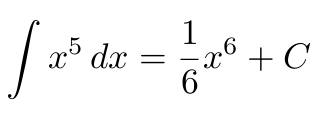

Integra y Aprende
"Según lo aprendido en clase, intenta resolver las siguientes integrales. Se te presentarán por ejercicios, y se busca que las resuelvas paso a paso. En cada uno de estos ejercicios, se te presentarán las opciones de respuesta. Para avanzar, debes seleccionar la opción que consideres correcta. Para apoyarte, en la parte superior tendrás un menú que contiene los formularios de derivadas e integrales.Puedes echarles un vistazo si lo necesitas. a continuacnión se te presentara una breve teoria de los diferentes tipos de integración.
Integrales Básicas
Las integrales básicas, también conocidas como reglas de integración elementales, son reglas y fórmulas que se utilizan para calcular integrales definidas e indefinidas de funciones simples y comunes en cálculo integral. Estas reglas son esenciales para el proceso de encontrar el área bajo una curva, la acumulación de cantidades y otras aplicaciones matemáticas. .Conceptualmente, la integral es la operación inversa a la derivación. Esto significa que cuando encontramos la integral de una función, obtenemos la función que al derivarla nos dará la función que estamos integrando. Por ello la integral se conoce también como antiderivada.
Integrales Por Sustitución
Las integrales por sustitución, a veces llamadas cambio de variable o sustitución trigonométrica, son una técnica fundamental en cálculo integral que se utiliza para simplificar la integración de funciones más complejas. La idea detrás de esta técnica es reemplazar una variable en la integral con una nueva variable que simplifique la integración. Esto facilita la resolución de integrales que de otro modo serían complicadas o difíciles de abordar
Integración Por Partes
La integración por partes es una técnica importante en cálculo integral que se utiliza para calcular la integral del producto de dos funciones. Esta técnica se basa en la regla de derivación del producto, que establece que la derivada del producto de dos funciones es igual al producto de la derivada de la primera función por la segunda función, más la primera función por la derivada de la segunda función.